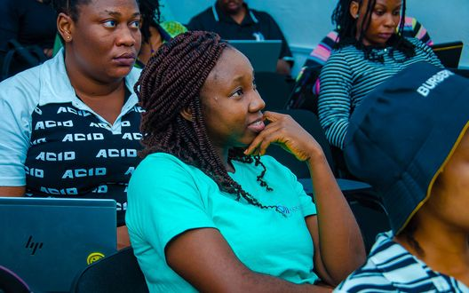
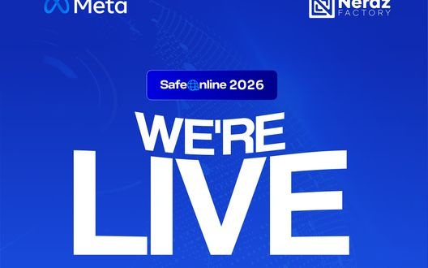
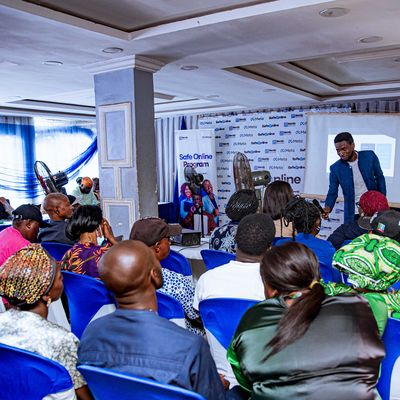

| Social Impact
Newsletter
October 2026 |
|
October at NerdzFactory CompanyFrom digital skills training to safer digital spaces, our work continues to create opportunities for people and communities to learn, grow and thrive. Here are this month’s highlights from the Design & Digital Marketing School and SafeOnline, plus what’s coming next. |
On the Ground | DDM School Cohort 3 BeginsWith LSETF and GIZ, the Design & Digital Marketing School Lagos Programme is training 100 Lagos youths aged 18 to 35 in digital marketing and graphic design, building practical skills for jobs in the digital economy. |
|  | SafeOnline Young People Teaching Young PeopleThrough the SafeOnline Youth Track, young peer educators lead sessions for teenagers aged 13 to 17 in schools and communities on spotting online risks, healthier screen time and using AI responsibly, through peer-led AI Literacy Circles. |
|
|
By the Numbers75% placements facilitated as a proportion of participants trained across Cohorts 1 and 2 |
| 93% DDM programme completion rate across Cohorts 1 and 2 |
| 100 participants in DDM Cohort 3 |
| 50 SafeOnline Youth Track peer educators |
|
|
What’s Ahead | Experience AI Strengthening Teachers’ Digital LiteracyWith the Raspberry Pi Foundation and Google DeepMind, we will train 4,000 teachers across Lagos, Ogun, Oyo, Ondo and Ekiti in digital skills and AI for learning, including 500 Special Needs teachers with tailored training and assistive resources. |
| TTS Nigeria Preparing Young Women for Digital CareersUnder the Technology Talent Services (TTS) Nigeria programme, we are preparing to train young women aged 18 to 35 in Lagos and Ogun in Digital Marketing and Data Analytics. Hands-on projects and employability skills will prepare them for roles in Nigeria’s growing BPO and digital services sectors. |
|
|
 | MTN Help Children Be Children Your Screen, Your StoryA 2-hour interactive virtual event for young people, parents, guardians and educators on cyberbullying, AI, online privacy and digital wellbeing, with expert discussions and practical tips for safer online habits. Saturday 12th December 2026
10:00am WAT, online | | |
|
|
In the News | The Nation NerdzFactory and Meta Equip Parents and Guardians with Digital ToolsThe Nation covered our work with Meta helping parents and guardians support safer online experiences for children. |
|
Staying ConnectedThank you for being part of our journey. As our work across digital skills, education and social innovation grows, we look forward to strengthening our partnerships and finding new ways to collaborate. Here’s to making more progress together. |
A monthly look into the programmes, people and communities at the centre of NerdzFactory Company’s work.
www.nerdzfactory.co |